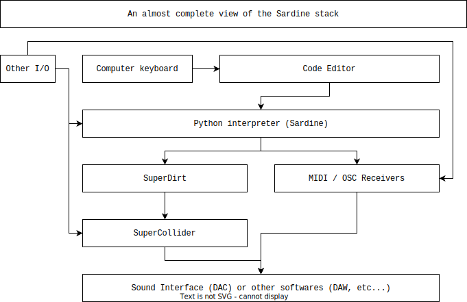
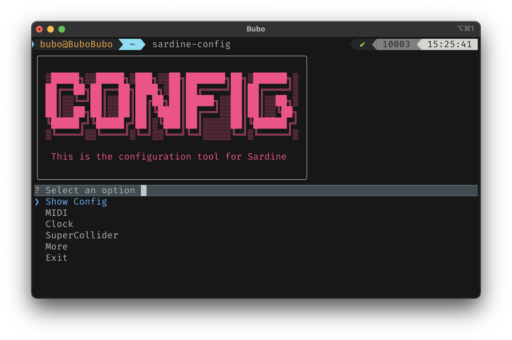
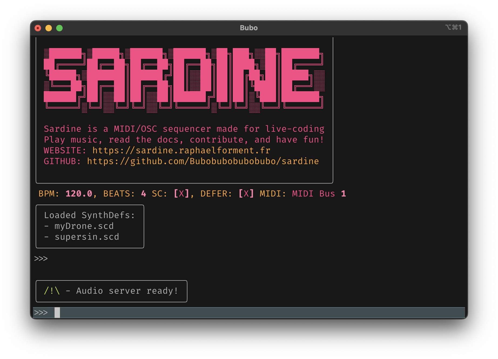

Installation
The installation of Sardine is done in two separate steps that you can go through in any order:
-
[MANDATORY] Installing / configuring of the Sardine library and your text editor.
-
[RECOMMENDED] Installing / configuring the audio backend (SuperDirt).
Sardine by itself is just a program that does I/O (Input/Output) of various musical information. It is up to you to configure the rest so that it can make sound! The better part is that you can configure it however you like for whatever musical purpose you have in mind :) By installing everything correctly, you will be able to integrate Sardine with almost any musical application.
Sardine is a multi-layered 'lasagna-style' software

I - Library
Sardine can be installed like any other Python package using pip, the official package manager. It is now also hosted on Pypi, the Python package manager. You don't have to download anything manually!
Installing and updating Python
1) Install Python for your operating system (>=3.10). Update if needed!
2) Open a terminal and type python or python3 for extra safety.
A prompt will open telling you what version you currently default to.
Please make sure that you are running at least Python 3.10.
Being aware of your installed Python versions is of tremendous importance. You can have multiple versions of Python running on your system, some being required by your operating system, some being installed by other applications. They sometimes end up piling up. Find the command that will summon your Python 3.10 or Python 3.11 installation (can be python, python3, python3.10, python3.11 depending on the system you are currently using)..
You can now safely proceed to download and install Sardine:
This will install the sardine-system package from PyPI
with an external index providing prebuilt wheels for the python-rtmidi dependency.
Right now, python-rtmidi
does not have prebuilt wheels for 3.10 and 3.11. Installing sardine without the
external index will require C++ build tools in order to compile the RtMidi library.
Alternatively, if you want to install the development version, follow the steps below:
1) Download the repository from GitHub:
If you are planning to contribute, you should clone the repository using Git:
Otherwise if you don't have Git installed, you can click the green Code button instead, download it as a zip, and unpack it.
2) Using a shell or cmd, go to the sardine folder you downloaded
and run the command:
The period denotes the current directory of your shell, which should be where you've downloaded your package.
The -e/--editable
flag allows you to make changes to the source code after you've already installed the package.
If you are using Linux or MacOS, use sudo to install with the highest
privileges. This is usually not recommended but it can help with the
installation of other Sardine components.
The above commands can take quite some time depending on your internet connection, your computer specifications, etc... It will install Sardine as well as all the packages and libraries needed to get it running. This is likely the step where you will start noticing crashes, errors and sometimes some truly cryptic messages. Please watch carefully, and do not let an error pass without notice. This might result in a broken / incomplete installation of Sardine.
Wait until the end of the process. To test if Sardine is installed properly, execute the following commands in your terminal:
You should now see a big bright SARDINE written on your screen. Congratulations!
This is the indication that Sardine was able to start!
II - Audio engine
Installation
Installing SuperCollider and SuperDirt
- Refer to the SuperDirt
installation guide for your platform. It will guide you through the
installation of SuperCollider and
SuperDirt. It is usually a three step process:
- install SuperCollider.
- run
Quarks.install("SuperDirt")in the SCIDE window. - run
SuperDirt.startto start the engine.
SC3-plugins
You might want to check out SC3-plugins. These plugins will dramatically increase the possibilities if you are planning to use sampling or the internal synthesis engine a lot!
SuperDirt is the optional but very much recommended synthesis engine for Sardine. As a matter of fact, Sardine was initially built as an alternative client for SuperDirt. It is a well-known free and open source piece of software used by live coders. SuperDirt is mostly developed by Julian Rohrhuber, and intended to be used initially for TidalCycles, a truly great live coding library. SuperDirt is triggered by simple OSC messages converted into SuperDirt instructions that will start audio amples, synthesizers and do many other things, taking care of the finicky details. Note that it also means that your Sardine configuration will be valid and portable to TidalCycles.
III - Configuration
SuperDirt is not enabled by default
Sardine is perfectly capable of booting both SuperCollider and SuperDirt by itself. However, this mechanism is disabled by default because I can't assume that you will have it installed and configured properly! You can turn on the SuperDirt autoboot feature by tweaking the configuration.
Open up the configuration tool by typing:

Follow the menus to configure Sardine to your liking but remember to turn on SuperDirt and SuperCollider if you need it. Explore the menus a bit to understand all the things you can configure, we will come back to it later on. Sardine is very modular, you can enable or disable features very easily. If the sardine-config utility tool is missing, try reinstalling Sardine in admnistrator mode (sudo on Unix systems). If Python returns a message such as:
"WARNING: The scripts sardine-config, sardine-config-python and sardine-config-superdirt are installed in '/opt/local/Library/Frameworks/Python.framework/Versions/3.10/bin' which is not on PATH."
PATH.
Words of caution
About the autoboot feature
Sardine will assume that SuperCollider (and more specifically sclang)
is accessible on your $PATH. Everything should run just fine if you install
it in the default folder for your platform.
On some specific systems, you might need to locate the sclang executable
and to add it to $PATH.
Since Sardine v.0.2.1, some error messages from SuperCollider are also mirrored in Sardine to help you keep track of things going wrong on both sides :)
IV - Code Editor
Pick the editor you prefer from the following list. All of them have been tested with Sardine! It's only a matter of preference.
Text editors compatible with Sardine
- VSCode: great for everyone, from newcomers to exprienced users.
- Vim: fast, powerful, ubiquitous. Modal editor that requires some learning.
- Neovim: the modernized version of Vim, configurable using Lua.
- Emacs: Emacs is everything and can do anything.
- Jupyter Notebook: A data-science oriented tool that can support Sardine.
Working and making music with Sardine is usually done following the same method for all editors:
-
1) Opening a new blank
.pyfile (no need to save). -
2) Launching a terminal in the same coding environment
-
3) Sending lines of code from the code buffer to the terminal buffer.
If you already know how to do that for you, great! If you don't, please head to the configuration section where additional help concerning your editor of choice will be written.
Conclusion
You should now have Sardine (and possibly SuperDirt) installed. You can fine-tune your Sardine installation by running the configuration client:
This is the main configuration tool for Sardine. We will come back to it later. If the command is not found or if nothing happens, Sardine might not be installed correctly. Please worry and review the preceding steps!
You might get a message saying that you have no configuration file. Take for a guarantee that Sardine is installed! This is perfectly normal. By default, there is no configuration file until it is created the first time you start Sardine.
Open a new interactive Sardine session by running python3 -m fishery.
If everything is alright, some popup messages will be printed and you will be
left on a prompt (>>>) waiting for your input:

If you have opted to use the SuperDirt audio backend, you can start checking if everything is fine by playing a clap or a kickdrum:
If you want to play a note on your MIDI Synth, use this command instead:
If you hear the clap or the note you were expecting, you are good to go! Have fun!
Trivia
Alternative boot methods
So far, we've used the fast boot method for Sardine:
Note that you can boot Sardine manually in a two-step process:
1) python3 -m asyncio: start the asyncio REPL
2) from sardine import **: import Sardine library